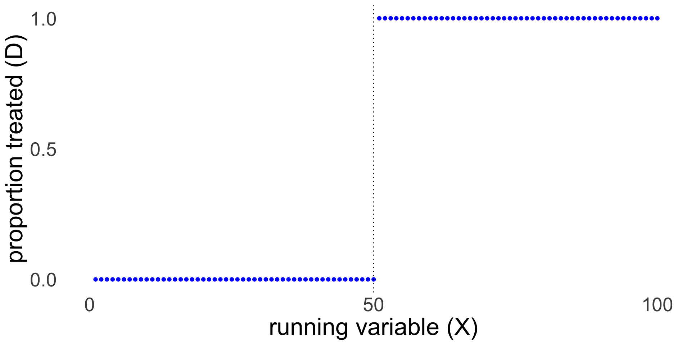
Exotic designs: Regression Discontinuity
Ozan Aksoy
March 3, 2026
Outline
Regression discontinuity design
- Estimand
- Assumptions
- Estimation
- Sharp
- Fuzzy
Regression Discontinuity Design
What is a discontinuity?
We are interested in the causal effect of \(D\) on \(Y\)
Assignment to treatment \(D\) depends on the value of variable \(X\)
After a certain threshold value \(c\) on variable \(X\), treatment is assigned (\(D = 1\))
Crucial assumption: People just below and just above the threshold are basically the same. Random processes put you just above or just below the threshold.
What is a discontinuity?
There are two types of processes for assignment
Sharp: treatment is only and always assigned to everyone after \(c\), never before that value
Fuzzy: treatment is more likely after \(c\) than before but not 100%; some below \(c\) do get treatment
Examples of discontinuities
What is the causal effect of receiving a Distinction for your university degree on income?
Students who get a distinction are also different in other ways from students who do not get a distinction
Distinction is awarded above threshold \(c\), e.g. in Oxford an average of 70
Nobody with average <70 gets \(D\), everyone with >=70 gets \(D\)
What is the difference between a student with an average of 69 and a student averaging 70?
Examples of discontinuities
Do politicians use their office to enrich themselves?
Earnings or wealth for former politicians and those from other careers is likely to be subject to selection bias.
Compare wealth at death for those who narrowly won their election to the House of Commons to those who narrowly lost. Conservatives who narrowly won their elections died on average almost £250,000 wealthier than candidates who narrowly failed (Eggers and Heinmueller).
How different are candidates with who got 49% of the votes versus 51%?
Examples of discontinuities
Does more education lead to better health?
Individuals with more education are different in many other ways than just education compared to people with less education.
In year X, the mandatory schooling age increased from age 14 to 15. People born on August 31st could leave school at 14, those born a day latter had to stay in school for another year.
How different are children who are born 1 day apart?
Impossible for parents to influence reform
Natural experiment / quasi-experimental
Around the discontinuity we assume random assignment
We need a deep understanding of the mechanisms that produce the threshold and assignment
Running variable (aka forcing variable)
Score on the running (aka forcing) variable \(X\) determines treatment \(D\), which in turn affects \(Y\)
\(X\) -> \(D\) -> \(Y\)
Above threshold \(c\) the probability of assignment to \(X\) suddenly changes:
Sharp: below the threshold nobody receives the treatment, above the threshold everyone receives the treatment
Fuzzy: the probability of assignment jumps up at the threshold but the link/compliance is not perfect
Sharp or Fuzzy
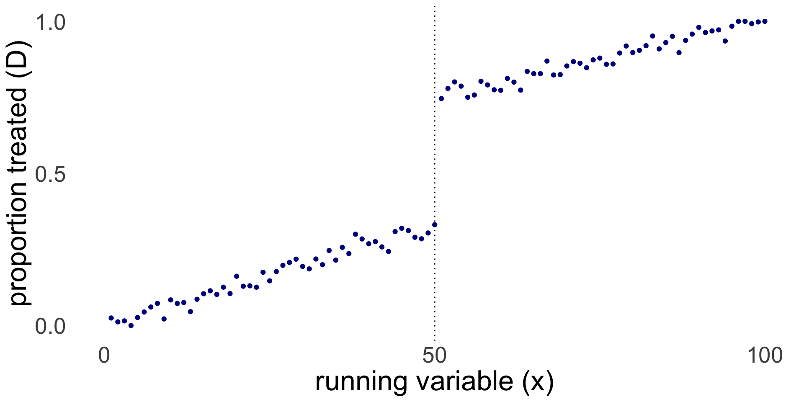
Here is an example of a Fuzzy RDD in R. In this cases everyone below \(c\) has \(D=0\), but above \(c\) likelihood of \(D=1\) increases with \(X\).
Discontinuity in treatment
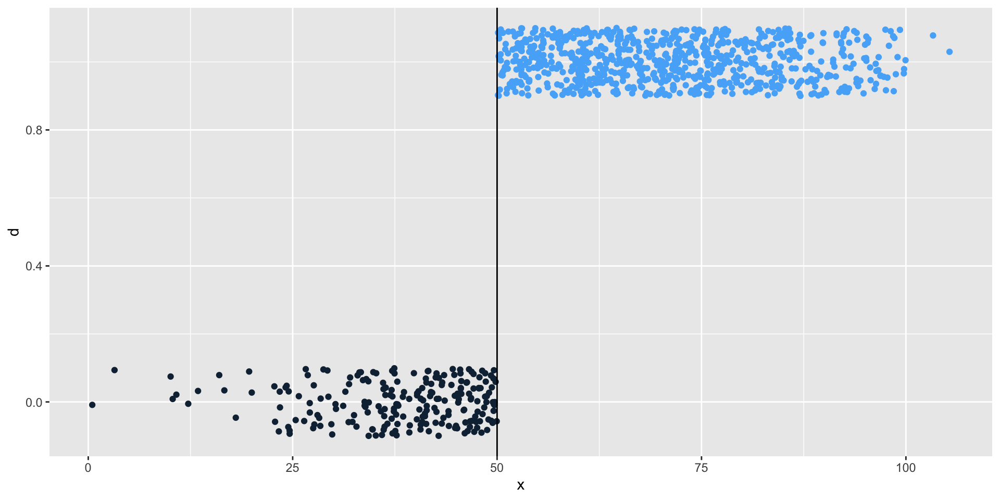
Discontinuity in outcome
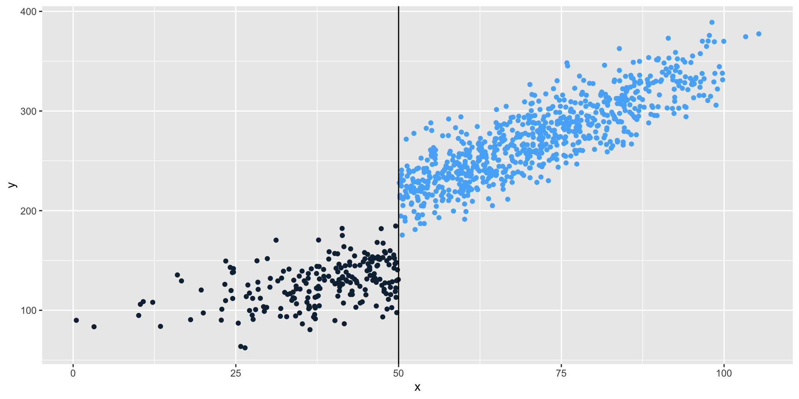
Sharp RDD
RDD and LATE
- Treatment \(D_i \in \{0,1\}\)
- Threshold \(c\) above which \(D_i = 1\)
- Potential outcomes under Treatment and controlL \(Y_i(1)\) and \(Y_i(0)\)
- Running/forcing variable \(X_i\) that determines if \(i\) is above/below \(c\)
\[ D_i = \begin{cases} 1 & \text{if } X_i > c, \\ 0 & \text{if } X_i \le c . \end{cases} \] Then, LATE is defined at the threshold c as:
\[ \tau = E[Y_i(1)-Y_i(0)|X_i = c] \]
Continuity assumption
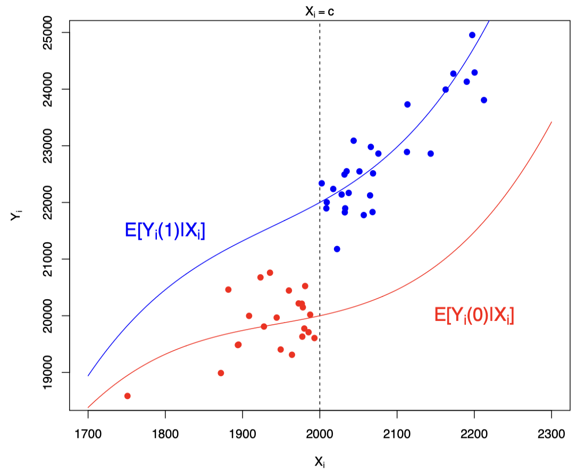
Continuity and no manipulation assumption
Potential outcomes should be continuous at the threshold \(c\) in \(X\)
No jumps at \(c\) for any other variables, only for \(Y\) and \(D\)
A sufficient condition for this assumption is a lack of perfect manipulation
respondents can not manipulate exactly where on the score they end up (ie just below or just above threshold)
you can manipulate roughly where on a test score you end up (ie study hard), but you can not manipulate it by 1 point
Other assumptions
Continuity of POs
No perfect manipulation of \(X\)
Local SUTVA
Sharp RD: Treatment assignment must change discontinuously at the cutoff
Fuzzy RD: Exclusion restriction (here must be no “direct” effect of crossing ccc on the outcome.)
Correct functional form is estimated locally
In-class task: RDD contest (5mins)
Think of your dissertation topic or some topic of interest
Can you think of an RDD in this context?
Discuss with your peer
Checking the continuity assumption
Plot observed variables against the threshold (running variable vs covariates: do we see a jump?)
Are there any other discontinuities?
Placebo discontinuity
McCrary density test
Density test around the cutoff
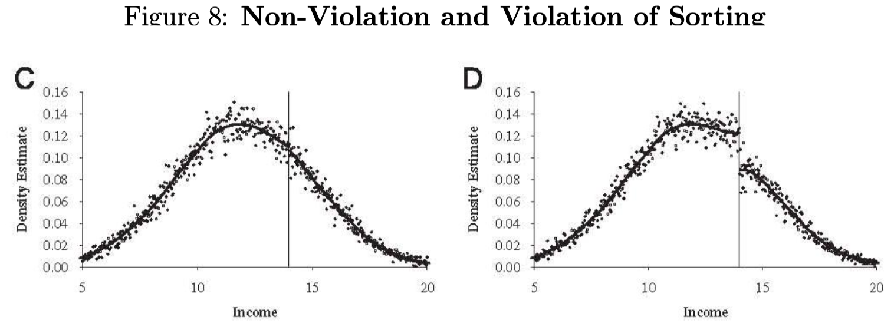
Sharp Design in equations
Clear cutoff value for the running variable
- \(X < c\) : no treatment
- \(X >= c\) : treatment
\(Y\) is a continuous outcome
\(c\) is the threshold value
\(D\) is a dummy for treatment (0/1)
\[Y = f(X) + \beta(X \ge c) + \epsilon\] \[or\] \[Y = f(X) + \beta D + \epsilon\]
Sharp Design parametric
To shorten the equations: \(\tilde{X} = X - c\)
\[Y = \beta_0 + \beta_1D + \beta_2\tilde{X} + e\]
\[\beta_1 \text{ describes the treatment effect at threshold c}\]
We often estimate a more flexible model that allows different slopes left and right from the cutoff:
\[Y = \beta_0 + \beta_1D + \beta_2\tilde{X} + \beta_3\tilde{X}*D + e\] Now \(\beta_2\) is the slope of \(X\) on the left and \((\beta_2+\beta_3)\) is the slope on the right.
If we think \(f(X)\) is non-linear, e.g. quadratic, we add a functional form:
\[Y = \beta_0 + \beta_1D + \beta_2\tilde{X} + \beta_3\tilde{X}^2 + \beta_4\tilde{X}*D + \beta_5\tilde{X}^2*D + e\]
\(f(X)\) matters for the estimated gap
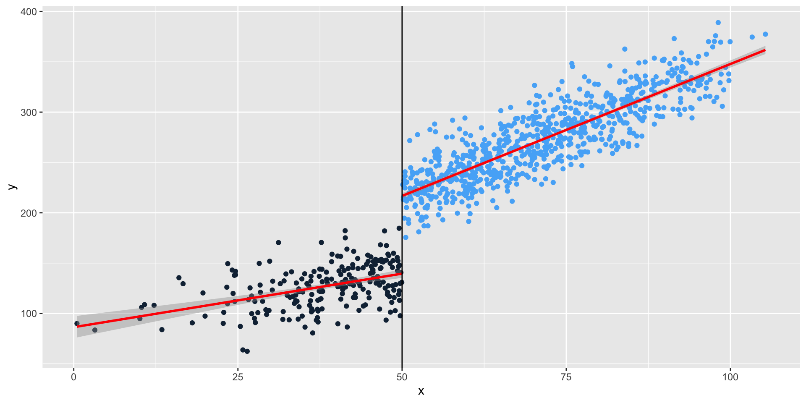
\(f(X)\) LOESS instead of OLS
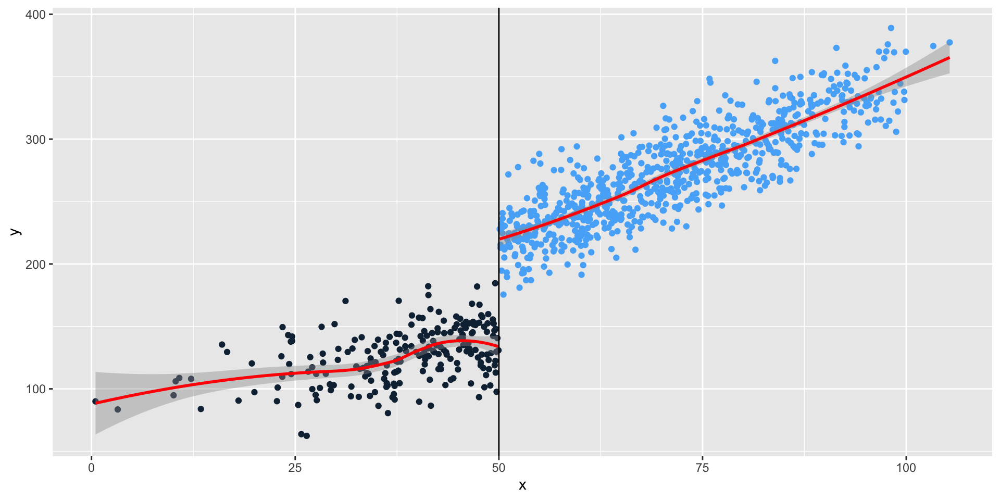
Bandwidth: the window around \(c\)
Our estimand is LATE around the threshold
What counts as around?
It matters who we include on either side of \(c\)
Further away: more cases, less clear it’s an experiment
What is the right or optimal bandwidth: ad hoc/substantive vs data-driven approaches
Non-parametric approaches
If we don’t want to make assumptions about \(f(X)\)
Instead, an algorithm determines the shape based on the data:
- locally weighted least squares
- Kernel-weighted local polynomial smoothing
- Smooths out the curves left and right, gives more weight to points closer to each other
- Bandwidth still matters
After shaping the curves, compare the gap at the discontinuity. Compare the results of different approaches.
In R this can be done with the rdrobust package
Why should you be careful about \(f(x)\):
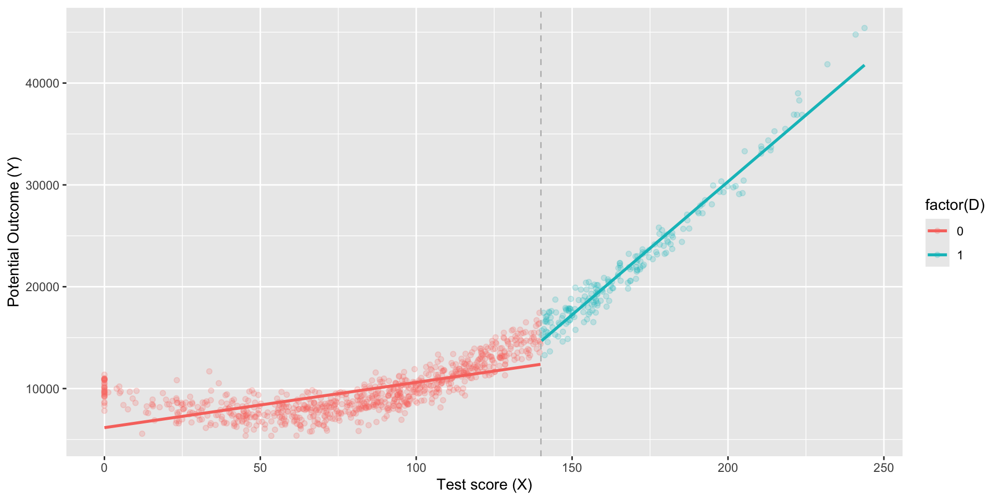
An example
Credit: Andrew Heiss’ Program Evaluation course, see here
Research question: What is the causal effect of tutoring?
What is our estimand?
Steps
Is the discontinuity rule-based?
Is the discontinuity sharp or fuzzy?
Checking for manipulation
Finding discontinuity in outcome
Measuring the gap parametrically
Measuring the gap non-parametrically
Fuzzy or sharp?
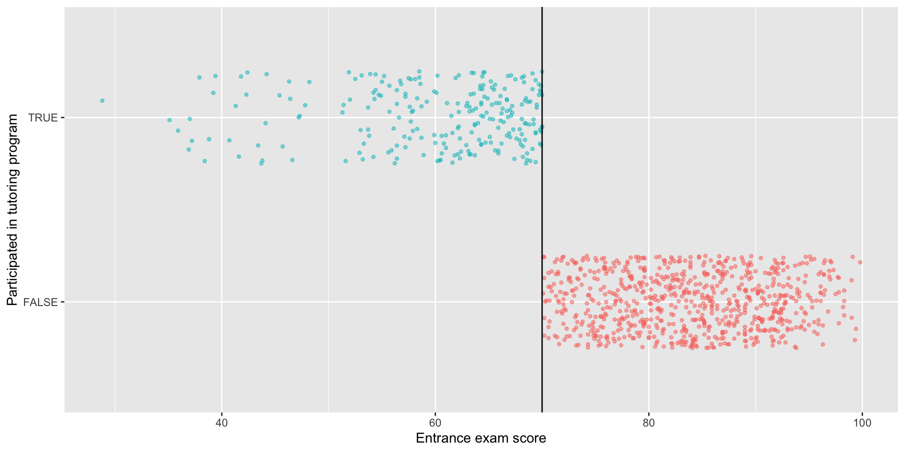
Fuzzy or sharp?
# A tibble: 2 × 3
# Groups: tutoring [2]
tutoring `entrance_exam <= 70` count
<lgl> <lgl> <int>
1 FALSE FALSE 759
2 TRUE TRUE 241No non-compliers! This is sharp.
Is there manipulation?
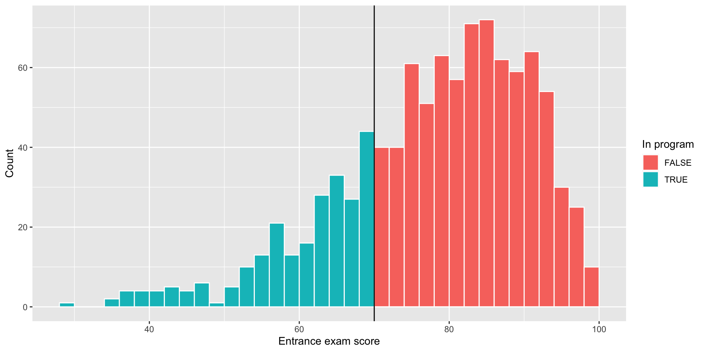
Test for manipulation - McCrary test
## test difference in estimated density functions at the cutoff
test_density <- rddensity(tutoring$entrance_exam, c = 70)
summary(test_density)
Manipulation testing using local polynomial density estimation.
Number of obs = 1000
Model = unrestricted
Kernel = triangular
BW method = estimated
VCE method = jackknife
c = 70 Left of c Right of c
Number of obs 237 763
Eff. Number of obs 208 577
Order est. (p) 2 2
Order bias (q) 3 3
BW est. (h) 22.444 19.966
Method T P > |T|
Robust -0.5521 0.5809
P-values of binomial tests (H0: p=0.5).
Window Length / 2 <c >=c P>|T|
0.900 20 21 1.0000
1.800 36 38 0.9076
2.700 47 57 0.3776
3.600 62 78 0.2047
4.500 75 98 0.0941
5.400 87 120 0.0259
6.300 105 151 0.0048
7.200 119 173 0.0019
8.100 129 200 0.0001
9.000 136 227 0.0000Test for manipulation - McCrary test
Is there a discontiniuty in the outcome?
- Plot two lines, one for exam <=70 and one for >70
- In sharp design, these Z and X are aligned (score <=70 = tutoring)
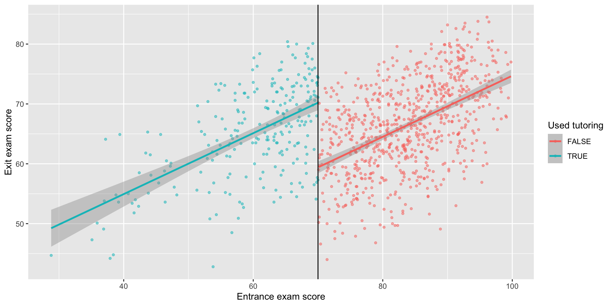
How big is the gap?
\[Y = \beta_0 + \beta_1 (X-c) + \beta_2 D + \epsilon\]
\(Y\) is final test score \(X\) is entrance score \(c\) is the cutt-off \(D\) is the treatment (tutoring)
(* Note Heiss does not include the interaction between \(\hat{X}\) and \(D\) in his example as in this particular case the models with and without are equivalent becasue the slopes left and right are similar)
How big is the gap? Parametric
# A tibble: 3 × 5
term estimate std.error statistic p.value
<chr> <dbl> <dbl> <dbl> <dbl>
1 (Intercept) 59.4 0.442 134. 0
2 entrance_centered 0.510 0.0269 18.9 1.40e-68
3 tutoringTRUE 10.8 0.800 13.5 3.12e-38How big is the gap? What bandwidth?
model_bw_10 <- lm(exit_exam ~ entrance_centered + tutoring,
data = filter(tutoring_centered,
entrance_centered >= -10 &
entrance_centered <= 10))
tidy(model_bw_10)# A tibble: 3 × 5
term estimate std.error statistic p.value
<chr> <dbl> <dbl> <dbl> <dbl>
1 (Intercept) 60.4 0.752 80.3 2.99e-249
2 entrance_centered 0.388 0.114 3.40 7.45e- 4
3 tutoringTRUE 9.27 1.31 7.09 6.27e- 12How big is the gap? What bandwidth?
model_bw_5 <- lm(exit_exam ~ entrance_centered + tutoring,
data = filter(tutoring_centered,
entrance_centered >= -5 &
entrance_centered <= 5))
tidy(model_bw_5)# A tibble: 3 × 5
term estimate std.error statistic p.value
<chr> <dbl> <dbl> <dbl> <dbl>
1 (Intercept) 60.6 1.12 54.3 4.78e-118
2 entrance_centered 0.380 0.331 1.15 2.53e- 1
3 tutoringTRUE 9.12 1.91 4.77 3.66e- 6How big is the gap? What bandwidth?
| Full data | Bandwidth = 10 | Bandwidth = 5 | |
|---|---|---|---|
| (Intercept) | 59.411 | 60.377 | 60.631 |
| (0.442) | (0.752) | (1.117) | |
| entrance_centered | 0.510 | 0.388 | 0.380 |
| (0.027) | (0.114) | (0.331) | |
| tutoringTRUE | 10.800 | 9.273 | 9.122 |
| (0.800) | (1.309) | (1.912) | |
| Num.Obs. | 1000 | 404 | 194 |
| R2 | 0.268 | 0.162 | 0.222 |
| R2 Adj. | 0.267 | 0.158 | 0.214 |
| AIC | 6595.3 | 2663.5 | 1303.1 |
| BIC | 6615.0 | 2679.5 | 1316.2 |
| Log.Lik. | -3293.663 | -1327.755 | -647.567 |
| F | 182.971 | 38.891 | 27.310 |
| RMSE | 6.52 | 6.47 | 6.81 |
How big is the gap? Non-parametric
Sharp RD estimates using local polynomial regression.
Number of Obs. 1000
BW type mserd
Kernel Triangular
VCE method NN
Number of Obs. 237 763
Eff. Number of Obs. 144 256
Order est. (p) 1 1
Order bias (q) 2 2
BW est. (h) 9.969 9.969
BW bias (b) 14.661 14.661
rho (h/b) 0.680 0.680
Unique Obs. 155 262
=====================================================================
Point Robust Inference
Estimate z P>|z| [ 95% C.I. ]
---------------------------------------------------------------------
RD Effect -8.578 -4.352 0.000 [-12.101 , -4.587]
=====================================================================How sensitive are the results for bandwidth choice?
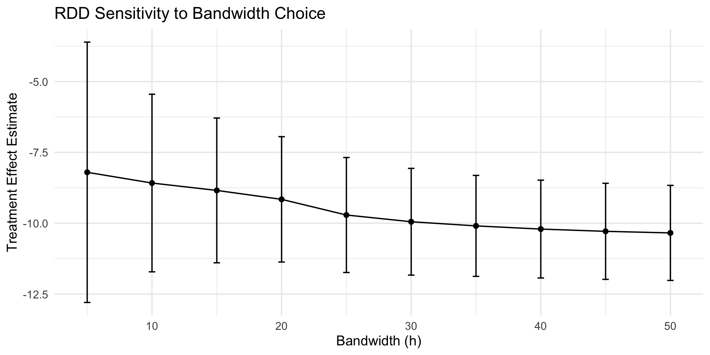
Fuzzy RDD
Fuzzy RDD
What if the threshold does not perfectly predict treatment?
But the running variable is a strong predictor of treatment and is random around the threshold
Sounds familiar…
We use the running variable and threshold \(c\) as an IV
\(X\) -> \(D\) -> \(Y\) (IV week: \(Z\) -> \(T\) -> \(Y\))
2SLS as in IV
LATE for compliers at the threshold
Sharp vs Fuzzy RD
A regression discontinuity setup has:
- Running variable:
X - Cutoff:
c - Treatment indicator:
D
Sharp RD:
D = 1(X >= c)exactly.
Fuzzy RD:
- Probability of treatment jumps at
c, but compliance is imperfect. - The cutoff indicator is an instrument for actual treatment near
c.
Fuzzy equations
\[\text{reduced form}\]
\[Y = f(X) + \beta_1(X \ge c) + \epsilon\]
\[\text{first stage}\]
\[D = f(X) + \beta_2(X \ge c) + \epsilon\]
\[\text{second stage}\]
\[Y = f(X) + \beta_3(\hat{D}) + \epsilon\]
Identification in Fuzzy RD
At the cutoff, the parameter of interest is:
\[ \tau\_{FRD} = \frac{\lim_{x\downarrow c}E[Y|X=x]-\lim_{x\uparrow c}E[Y|X=x]}{\lim_{x\downarrow c}E[D|X=x]-\lim_{x\uparrow c}E[D|X=x]} \]
Interpretation:
- Ratio of reduced-form jump in outcome to first-stage jump in treatment.
- A local average treatment effect for compliers at the cutoff.
R Setup
Applied Example (Simulated Fuzzy RD)
set.seed(2026)
n <- 3000
# Running variable and cutoff
x <- runif(n, -1, 1)
c0 <- 0
z <- as.integer(x >= c0) # cutoff indicator (instrument)
# Imperfect compliance: treatment probability jumps at cutoff
p_treat <- pmin(pmax(0.25 + 0.40 * z + 0.20 * x, 0.02), 0.98)
d <- rbinom(n, 1, p_treat)
# Outcome with true causal effect of treatment = 2.0
y <- 1 + 2.0 * d + 1.2 * x + 0.6 * x^2 + rnorm(n, sd = 1)
frd_dat <- data.frame(y = y, d = d, x = x, z = z)Visual Check: Fuzzy First Stage
Visual Check: Reduced form for outcome
Visual check: potential manipulation of x around the cutoff
Reduced form RD (not fuzzy yet)
Sharp RD estimates using local polynomial regression.
Number of Obs. 3000
BW type mserd
Kernel Triangular
VCE method NN
Number of Obs. 1491 1509
Eff. Number of Obs. 384 425
Order est. (p) 1 1
Order bias (q) 2 2
BW est. (h) 0.268 0.268
BW bias (b) 0.453 0.453
rho (h/b) 0.592 0.592
Unique Obs. 1491 1509
=====================================================================
Point Robust Inference
Estimate z P>|z| [ 95% C.I. ]
---------------------------------------------------------------------
RD Effect 0.719 2.794 0.005 [0.193 , 1.098]
=====================================================================Estimation with rdrobust (Fuzzy)
# Fuzzy RD: supply y, x, and fuzzy = treatment variable
a <- rdrobust(y = frd_dat$y, x = frd_dat$x, c = 0, fuzzy = frd_dat$d)
summary(a)Fuzzy RD estimates using local polynomial regression.
Number of Obs. 3000
BW type mserd
Kernel Triangular
VCE method NN
Number of Obs. 1491 1509
Eff. Number of Obs. 462 497
Order est. (p) 1 1
Order bias (q) 2 2
BW est. (h) 0.319 0.319
BW bias (b) 0.479 0.479
rho (h/b) 0.666 0.666
Unique Obs. 1491 1509
First-stage estimates.
=====================================================================
Point Robust Inference
Estimate z P>|z| [ 95% C.I. ]
=====================================================================
Rd Effect 0.379 4.848 0.000 [0.215 , 0.507]
=====================================================================
Treatment effect estimates.
=====================================================================
Point Robust Inference
Estimate z P>|z| [ 95% C.I. ]
---------------------------------------------------------------------
RD Effect 2.000 4.319 0.000 [1.017 , 2.706]
=====================================================================a includes: - Point estimate of local treatment effect at the cutoff - Robust standard error / confidence interval - MSE-optimal bandwidth choices
Doing it with 2SLS using bandwidths
Idea: mimic FRD by restricting to observations near cutoff and instrumenting d with z.
# Use the rdrobust bandwidth (left/right) to define a local sample
h_left <- a$bws[1, 1] ; h_right <- a$bws[1, 2]
local_dat <- frd_dat |>
filter(x >= -h_left, x <= h_right) |>
mutate(x_c = x, x_right = z * x_c)
iv_fit <- feols(y ~ x_c + x_right | d ~ z, data = local_dat)
modelsummary::msummary(list('second stage' = iv_fit, 'first stage' = iv_fit$iv_first_stage$d), stars = TRUE)| second stage | first stage | |
|---|---|---|
| + p < 0.1, * p < 0.05, ** p < 0.01, *** p < 0.001 | ||
| (Intercept) | 0.895*** | 0.264*** |
| (0.167) | (0.042) | |
| fit_d | 2.111*** | |
| (0.316) | ||
| x_c | 1.024+ | 0.370+ |
| (0.596) | (0.223) | |
| x_right | 0.773 | -0.334 |
| (0.723) | (0.307) | |
| z | 0.414*** | |
| (0.057) | ||
| Num.Obs. | 959 | 959 |
| R2 | 0.241 | 0.235 |
| R2 Adj. | 0.238 | 0.233 |
| AIC | 2737.7 | 1134.4 |
| BIC | 2757.1 | 1153.9 |
| RMSE | 1.00 | 0.44 |
| Std.Errors | IID | IID |
Why This 2SLS Matches `rdrobust`` Intuition
z = 1(x >= c)is exogenous at the cutoff under RD assumptions.- First stage:
zshifts treatment take-up (d) discontinuously. - Exclusion restriction: after controlling for local trends in
x,zaffectsyonly throughd. - Second stage uses only local variation around
c. - With local polynomial controls and small bandwidths, this targets the same local complier effect as fuzzy RD.
Always check robustness to bandwidth selection
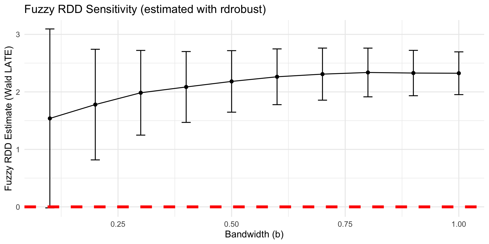
Practical Checklist for Fuzzy RD
- Verify a clear first-stage jump at cutoff.
- Use robust bias-corrected inference (
rdrobust). - Report bandwidth and polynomial order.
- Show sensitivity (alternative bandwidths / kernels).
- Check manipulation of running variable (e.g. McCrary test via
rddensity) - Peform placebo tests (use pre-treatment variables to check if there is discontinuity or significant RD effect)
Takeaway
Fuzzy RD is an IV design in a neighborhood of the cutoff:
- Instrument: crossing the threshold
- Treatment: actual take-up
- Estimand: local complier effect at the cutoff
rdrobust gives a principled default implementation, and local 2SLS makes the mechanics transparent.

Synthetic control and RDD